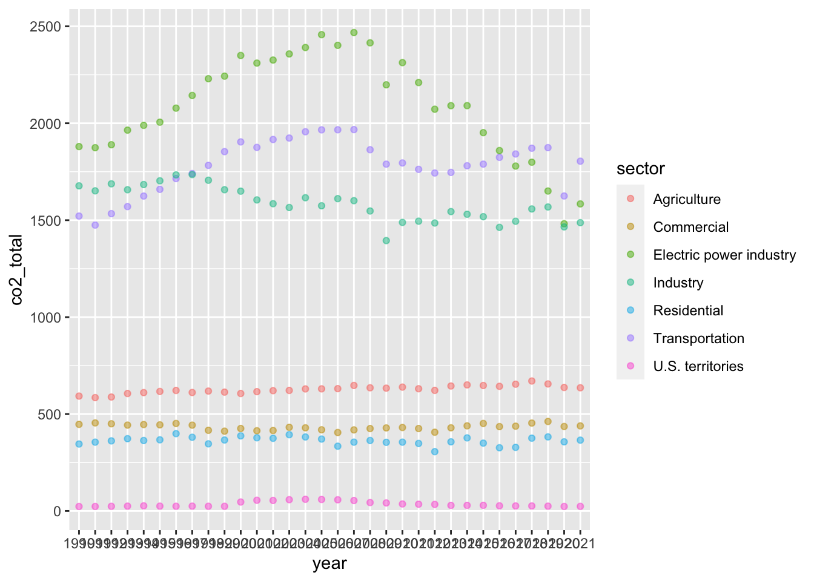
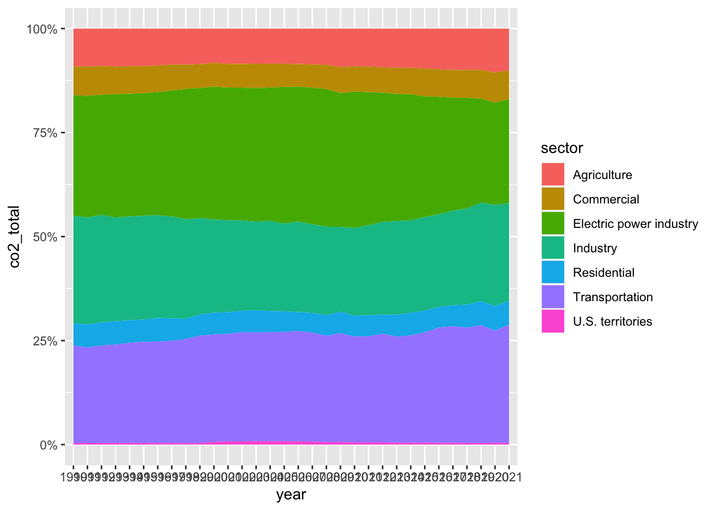
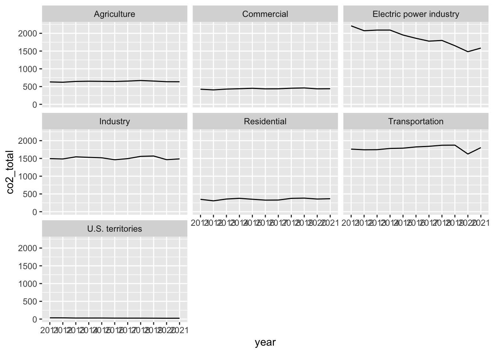
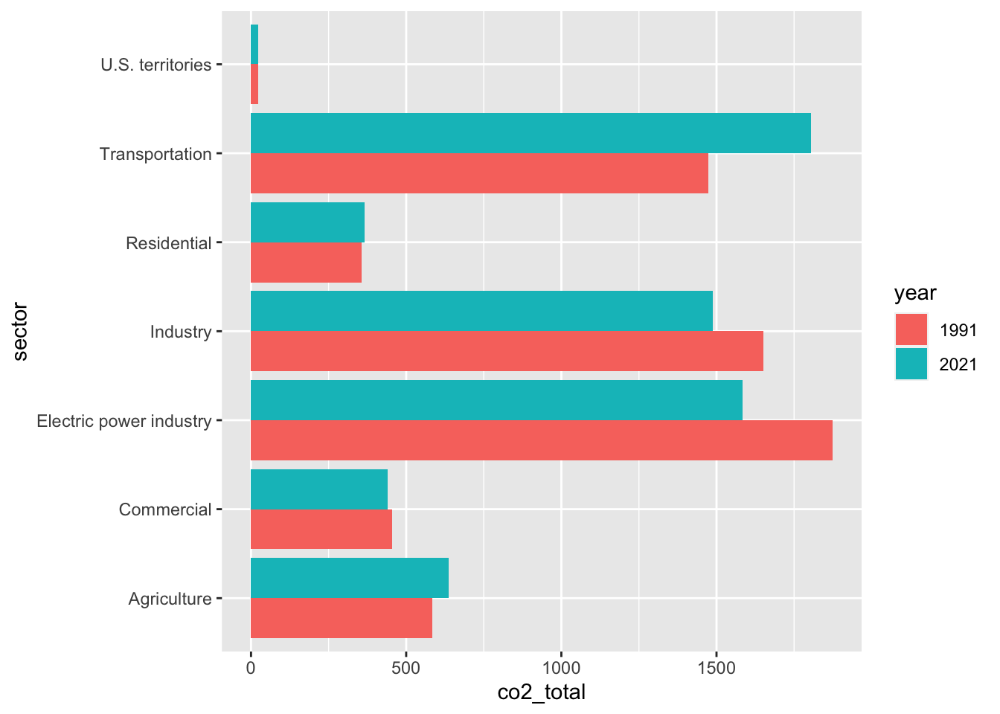
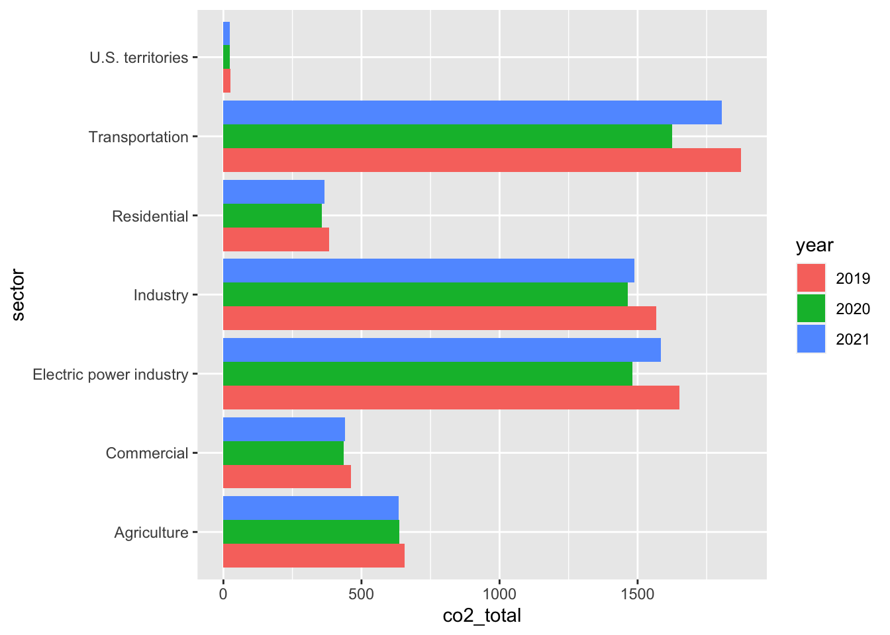

##~~~~~~~~~~~~~~~~~~~~~~~~~~~~~~~~~~~~~~~~~~~~~~~~~~~~~~~~~~~~~~~~~~~~~~~~~~~~~~## load packages ----##~~~~~~~~~~~~~~~~~~~~~~~~~~~~~~~~~~~~~~~~~~~~~~~~~~~~~~~~~~~~~~~~~~~~~~~~~~~~~~library(tidyverse) # for data importing, tidying, and manipulation ----
── Attaching core tidyverse packages ──────────────────────── tidyverse 2.0.0 ──
✔ dplyr 1.1.3 ✔ readr 2.1.4
✔ forcats 1.0.0 ✔ stringr 1.5.0
✔ ggplot2 3.4.4 ✔ tibble 3.2.1
✔ lubridate 1.9.2 ✔ tidyr 1.3.0
✔ purrr 1.0.2
── Conflicts ────────────────────────────────────────── tidyverse_conflicts() ──
✖ dplyr::filter() masks stats::filter()
✖ dplyr::lag() masks stats::lag()
ℹ Use the conflicted package (<http://conflicted.r-lib.org/>) to force all conflicts to become errors
library(janitor) # for data cleaning
Attaching package: 'janitor'
The following objects are masked from 'package:stats':
chisq.test, fisher.test
##~~~~~~~~~~~~~~~~~~~~~~~~~~~~~~~~~~~~~~~~~~~~~~~~~~~~~~~~~~~~~~~~~~~~~~~~~~~~~~## import data ----##~~~~~~~~~~~~~~~~~~~~~~~~~~~~~~~~~~~~~~~~~~~~~~~~~~~~~~~~~~~~~~~~~~~~~~~~~~~~~~#reading in the downloaded datarootdir <- ("~/Documents/MEDS/Winter_Q3/eds-240-class-examples")datadir <-file.path(rootdir,"assignments", "4", "Caswell-eds240-HW4", "data") emissions_dat <-read_csv(file.path(datadir,"data.csv"))
Rows: 8 Columns: 33
── Column specification ────────────────────────────────────────────────────────
Delimiter: ","
chr (1): U.S. Emissions by Economic Sector, MMT CO2 eq.
dbl (32): 1990, 1991, 1992, 1993, 1994, 1995, 1996, 1997, 1998, 1999, 2000, ...
ℹ Use `spec()` to retrieve the full column specification for this data.
ℹ Specify the column types or set `show_col_types = FALSE` to quiet this message.
#checking the structure of objectsstr(emissions_dat)
##~~~~~~~~~~~~~~~~~~~~~~~~~~~~~~~~~~~~~~~~~~~~~~~~~~~~~~~~~~~~~~~~~~~~~~~~~~~~~~## data cleaning & wrangling ----##~~~~~~~~~~~~~~~~~~~~~~~~~~~~~~~~~~~~~~~~~~~~~~~~~~~~~~~~~~~~~~~~~~~~~~~~~~~~~~emissions_clean <- emissions_dat %>%pivot_longer(cols ="1990":"2021") %>%#making data tidy janitor::clean_names() %>%#making all columns lower snake caserename(sector = u_s_emissions_by_economic_sector_mmt_co2_eq) %>%#renaming the columns to be more intuitiverename(year = name, co2_total = value) %>%#renaming the columns to be more intuitivemutate(co2_total =as.numeric(round(co2_total, 2)), year =as.character(year)) %>%#updating column typesfilter(sector !="Gross total") #filtering out the gross total sector
Data visualization
Create at least three different plots as part of your exploratory data visualization.
NOTE: For each visualization, open them in a new window in order to expand the image to compare years. The condensed plots will look messier than intended if not in a bigger window.
##~~~~~~~~~~~~~~~~~~~~~~~~~~~~~~~~~~~~~~~~~~~~~~~~~~~~~~~~~~~~~~~~~~~~~~~~~~~~~~## plot #1 ----##~~~~~~~~~~~~~~~~~~~~~~~~~~~~~~~~~~~~~~~~~~~~~~~~~~~~~~~~~~~~~~~~~~~~~~~~~~~~~~#Creating a scatterplot of all years of emissions data (1990 - 2021)emissions_clean %>%ggplot(aes(x = year, y = co2_total,color = sector, fill = sector)) +geom_point(alpha =0.5)

##~~~~~~~~~~~~~~~~~~~~~~~~~~~~~~~~~~~~~~~~~~~~~~~~~~~~~~~~~~~~~~~~~~~~~~~~~~~~~~## plot #2 ----##~~~~~~~~~~~~~~~~~~~~~~~~~~~~~~~~~~~~~~~~~~~~~~~~~~~~~~~~~~~~~~~~~~~~~~~~~~~~~~#Creating a stacked area plot of all years of emissions data (1990 - 2021)emissions_clean %>%ggplot(aes(x = year, y = co2_total, group = sector, fill = sector)) +geom_area(position ="fill") +#position = fill to get a better sense of the trends scale_y_continuous(labels = scales::label_percent(scale =100)) #adding percentages on the y axis

##~~~~~~~~~~~~~~~~~~~~~~~~~~~~~~~~~~~~~~~~~~~~~~~~~~~~~~~~~~~~~~~~~~~~~~~~~~~~~~## plot #3 ----##~~~~~~~~~~~~~~~~~~~~~~~~~~~~~~~~~~~~~~~~~~~~~~~~~~~~~~~~~~~~~~~~~~~~~~~~~~~~~~#Creating a stacked area chart line version with faceted sectors for most recent 10 yearsemissions_clean %>%filter(year %in%c(2011:2021)) %>%ggplot(aes(x = year, y = co2_total, group = sector, fill = sector)) +geom_line() +facet_wrap(~sector)

##~~~~~~~~~~~~~~~~~~~~~~~~~~~~~~~~~~~~~~~~~~~~~~~~~~~~~~~~~~~~~~~~~~~~~~~~~~~~~~## plot #4 ----##~~~~~~~~~~~~~~~~~~~~~~~~~~~~~~~~~~~~~~~~~~~~~~~~~~~~~~~~~~~~~~~~~~~~~~~~~~~~~~#Creating a bar plot comparing just 1990 to 2021 for each sectoremissions_clean_filtered <- emissions_clean %>%filter(year %in%c("1991", "2021"))emissions_clean_filtered %>%ggplot(aes(x = sector, y = co2_total, fill = year)) +geom_col(position =position_dodge()) +coord_flip()

##~~~~~~~~~~~~~~~~~~~~~~~~~~~~~~~~~~~~~~~~~~~~~~~~~~~~~~~~~~~~~~~~~~~~~~~~~~~~~~## plot #5 ----##~~~~~~~~~~~~~~~~~~~~~~~~~~~~~~~~~~~~~~~~~~~~~~~~~~~~~~~~~~~~~~~~~~~~~~~~~~~~~~#Creating a bar plot comparing pre and post covidemissions_clean_covid <- emissions_clean %>%filter(year %in%c("2019":"2021"))emissions_clean_covid %>%ggplot(aes(x = sector, y = co2_total, fill = year)) +geom_col(position =position_dodge()) +coord_flip()

What have you learned about your data? Have any potentially interesting patterns emerged? (5-8 sentences)
I have learned that my initial dataset is fairly simple. Since I only have one data point per year, I can compare over years and sectors, but there are not very many comparisons I can do outside of those two points. I have also learned that there are specific sectors contributing to more of the United States’ emissions, and my assumptions have held true that Transportation, Electric Power, and Industry would be some of the highest.
I do see general patterns with COVID-19 and in 2020 with emissions dropping for all sectors and then picking back up slightly in 2021, compared to previous years. I think it would also be interesting to compare this data at a more granular level than year to see detail on when emissions dropped during covid-19 (months or times of year) and associate that with covid trends like stay at home orders or vaccine introduction.
In HW #1, you outlined some questions that you wanted to answer using these data. Have you made any strides towards answering those questions? If yes, how so? If no, what next steps do you need to take (e.g. I need to create X plot type, I still need to track down Y data, I need to restructure existing data so that you can visualize it in Z ways, etc.)? (8-12 sentences)
In my initial data exploration, I was hoping to answer the question: How have carbon (co2) emissions changed over time by sector in the United States? In my exploratory visualizations, I have been able to make general conclusions and answer these questions fairly clearly. I also wanted to explore how the COVID-19 outbreak impacted greenhouse gas (ghg) emissions in each sector. In my preliminary visualizations, I am able to gather general patterns and notice drops in the data that align with my assumptions regarding a reduction in emissions as stay at home orders were in place across the US. One potential next step could be to summarize my data and calculate the percent change over the years that I have and map the change over time by sector in order to summarize the data.
To further my question on the COVID-19 impact, I was hoping to draw on the covid-19 peaks within years and graph a more detailed time series. In order to answer this question, I think I would need to track down an additional dataset that is more granular regarding time (month/time of year).
Although I have answered my initial questions, I would like to enhance my questions by making them more specific. To do this, I need to track down the following potential datasets: emissions by sector by country, emissions by sector AND another variable like industry or category, or emissions by sector by state and include latitude/longitude data to also incorporate maps into the project.
What challenges do you foresee encountering with your data? These can be data wrangling and / or visualization challenges. (4-6 sentences)
I think the biggest challenge I foresee with this data is that it’s fairly simple at its core since there are only three major variables. I will likely need to either: 1. find a different dataset that is more granular or 2. gather additional data. In finding a different dataset, I might need to be more granular, including data that has multiple variables (either globally or more specific than sector). To acquire additional data to join with this current dataset, I might look for a sector breakdown across other regions or countries or have another variable along with sector, like industry or for profit/non profit.
Additionally, I could also explore my Strava data and answer the questions I initially documented for that dataset, however, it will be much more timely to understand the data, wrangle it, and work with the mapping components. I will do this independently and, if possible, generate exploratory plots in case I do intend to pivot and take that approach.